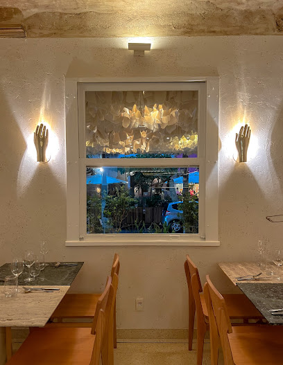

| Nome |
Imagem |
Endereço |
Descrição |
| Nôa Ipanema |
 |
Rua Garcia d'Avila, 135 - Ipanema, Rio de Janeiro - RJ, 22421-010 |
- Restaurante Mediterrâneo
- Empresa que acolhe a comunidade LGBTQ+
- Se identifica como uma empresa de empreendedoras
|
| Rampinha Restaurante |
|
Praca da Bandeira, Rio de Janeiro - RJ |
Restaurante tradicional luso-brasileiro que serve bacalhau frito, polvo assado, carne ao alho e muito mais. |
| Outback Steakhouse |
|
R. Fonseca, 240 - Bangu, Rio de Janeiro - RJ, 21820-005 |
Rede de restaurantes em estilo australiano que serve vários cortes de carne e frutos do mar em porções fartas. |
| Restaurante Pitanga |
|
Flamengo, Rio de Janeiro - RJ |
Restaurante com culinária brasileira caseira, que serve carnes, frango e saladas, além de feijoada às sextas. |